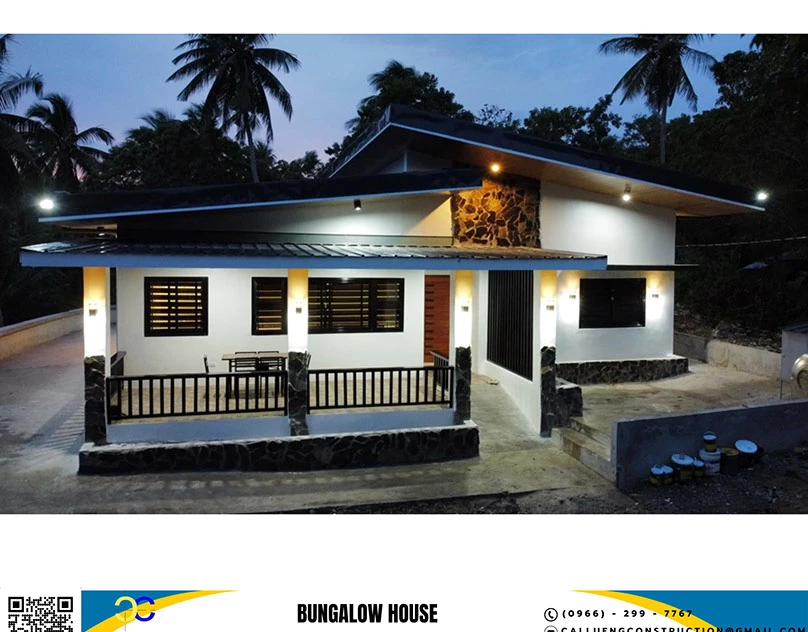

Stay close.
To every decision.
A proposed client workspace that keeps the project conversation, approved records, and next decisions together.
Less chasing.
More understanding.
See what was approved, what happens next, and what the team needs from you.
Explore the sample workspace
Santos residence
Fictional client and project records. Nothing is sent or committed.
Where the sample project stands
Latest update
The sample team is resolving inspection items before the next structural milestone. An exterior finish selection is ready for review.
Exterior accent finish
Warm stone textured paint for the entrance accent wall. Within the sample allowance.
Demo approval creates no real scope change, order, contract, or financial commitment.
Approved sample record
Sample revision record
Sample completion record
A clear record.
With the right access.
How are changes handled?
A proposed change should identify the revised work, price and schedule impact before approval. The prototype client-care page shows how that conversation could be recorded.
Will the client portal show my real project?
This prototype uses fictional project records. A live portal would need secure access, project-specific permissions, and approved updates from the team.
What would a live workspace need?
Secure sign-in, project-specific permissions, versioned documents, approved updates, and an auditable decision record. This page demonstrates the proposed experience only.
Your next chapter starts with a plan.
Bring your idea. Leave with a clearer starting point.
Plan my build